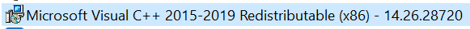

Summary: Error running the Weak password job as a scheduled task
Issue: Running the Weak password job manually works without any issues. When running the job as a scheduled task you get the below error
System.IO.FileNotFoundException: Could not load file or assembly 'DSInternals.Replication.Interop.dll' or one of its dependencies. The specified module could not be found. File name: 'DSInternals.Replication.Interop.dll' at DSInternals.Replication.DirectoryReplicationClient..ctor(String server, RpcProtocol protocol, NetworkCredential credential) at Stealthbits.StealthAUDIT.DataCollectors.PasswordSecurity.Tasks.WeakPasswordsScanTask.InternalProcessRecord() at Stealthbits.StealthAUDIT.DataCollectors.Tasks.Task.StartExecute()
Instructions: Log onto Stealth Audit console
Confirm that you can run the job manually
Schedule the Weak password job
If you get the above error
Check Program and Features to see if the below application is missing (You need the x86 version)

The version you need is the x86 version which can be found here
https://aka.ms/vs/16/release/vc_redist.x86.exe
Once its installed try and run the scheduled task again
Product: Stealth Audit
Module: Active Directory
Versions: 10